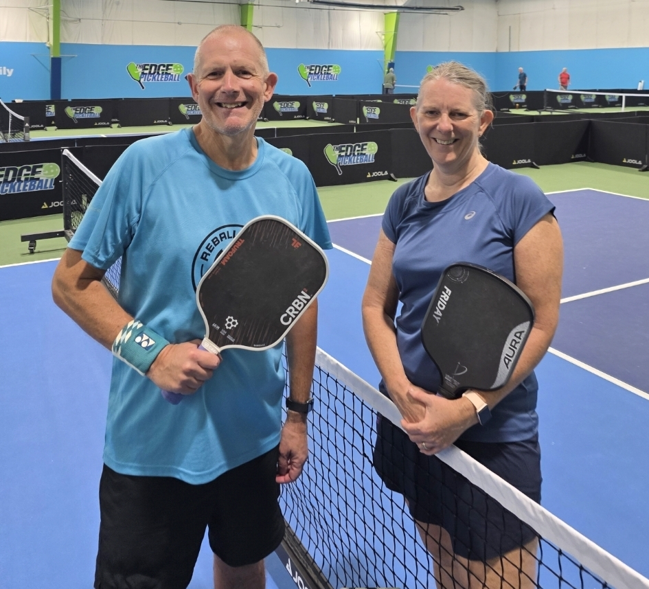

Vermont doesn't have the density of indoor clubs you'll find in Boston or Seattle, but Burlington and neighbouring South Burlington cover the basics well — a dedicated indoor facility, a couple of pay-to-play community options, and city parks for outdoor drop-in. We played at Vermont Pickleball, the state's first dedicated indoor facility, to see what a travelling player can expect.
Guide checked: September 2026 · Last played: July 2026

Vermont Pickleball, run inside The EDGE Total Health Network, was the state's first dedicated indoor pickleball facility and remains the biggest court count in the Burlington area by a wide margin. The club runs on a membership model rather than casual pay-to-play, so it's built more for local regulars than drop-in travellers, but the courts themselves are purpose-built and well maintained.
The games we found were solidly recreational — most of what was on court sat around 3.0–3.5, so it's a better stop for building volume at that level than for hunting down a tough 4.0+ match. For that, Sideout Tsunami in Seattle is the stronger stop on our North America route. Visitors should contact the club ahead of a visit to check guest access, since membership is the default route in.
Our take: the courts and facility are excellent, but the membership model makes it more of a plan-ahead stop than a walk-in one — worth the call if you're in town for a while, less convenient for a single-night stopover.
| Court quality | ★★★★★ |
| Quality of games | ★★★☆☆ |
| Ease of joining | ★★★☆☆ |
| Competitive level | ★★★☆☆ |
| Value | ★★★★☆ |
| Wanderers rating | 7/10 |
Would we go back? Yes, with caveats. The facility itself is one of the better-built indoor setups we've played on this route, but the membership requirement and the mostly 3.0–3.5 level on court mean it suits a longer stay or a stronger group booking a private court more than a quick drop-in for a tough match.
Catamount runs on a one-time drop-in fee rather than membership, which makes it the more travel-friendly option of the two South Burlington indoor clubs. Seven acrylic indoor courts, plus the usual amenities — food, pro shop, lessons available.
A single indoor wood court in downtown Burlington, run on a daily-use fee or discounted punch card. Small-scale, but it's a pay-to-play option right in the city rather than out in South Burlington.
Two indoor courts at the downtown YMCA. Members-only, but worth knowing about if you're already a Y member or staying long enough that a visitor pass makes sense.
For a free outdoor option, Leddy Park and Callahan Park each have four dedicated courts, and Oakledge Park and Appletree Park add a few more between them. No booking system — it's first-come, first-served like most municipal courts.
It's membership-based, not drop-in — contact the club before you arrive to check guest or visitor access.
If you just want to walk in and play without setting up a membership, Catamount's one-time fee model is the easier route.
Most of the open play we found sat around 3.0–3.5 — if you're chasing a strong 4.0+ match, this isn't the strongest stop on the route.
The city parks have no equipment on-site, and it's worth having your own even at the clubs.
Burlington is a solid, if modest, pickleball stop. The court quality at Vermont Pickleball is genuinely excellent, but the membership model and the mostly recreational level on court keep it from being an easy walk-in win the way Boston or Seattle was. If you're passing through for a night or two, Catamount's pay-to-play model or the free city parks are the more practical choices. Heading north from Vermont? Our Montreal guide is the natural next stop to compare against.